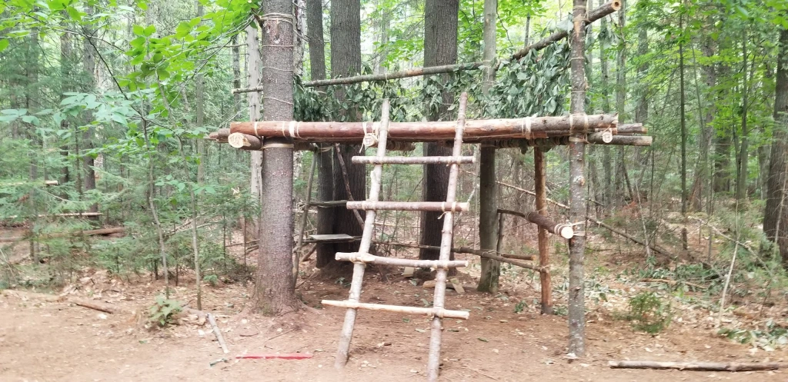
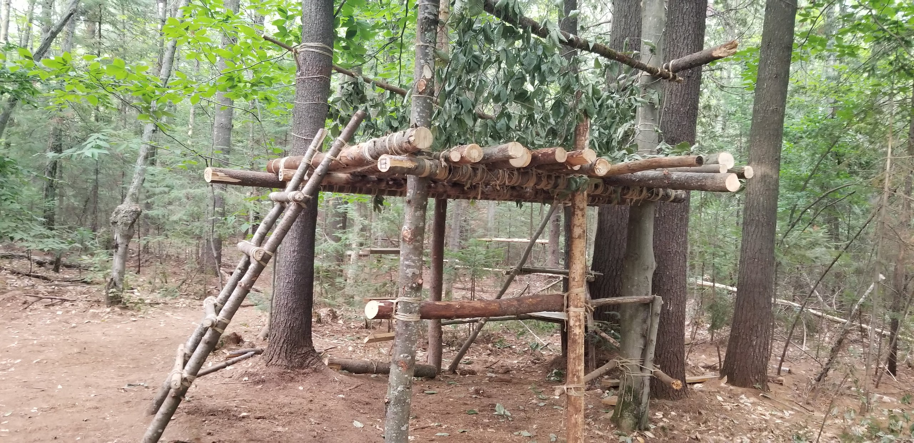
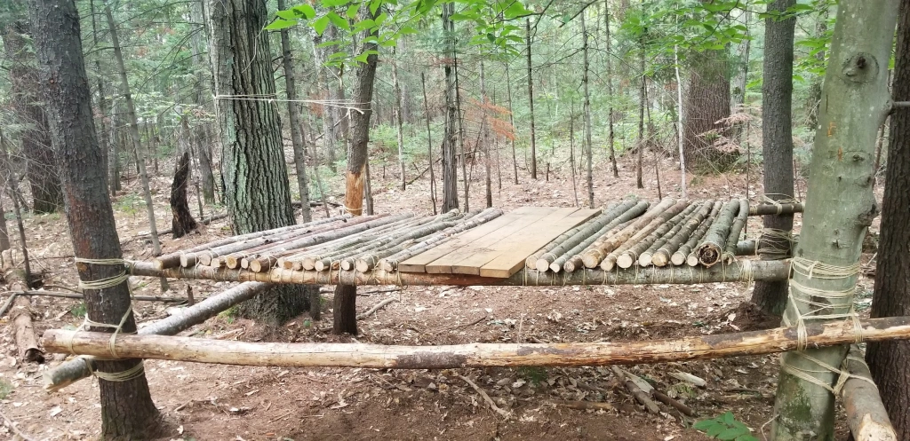
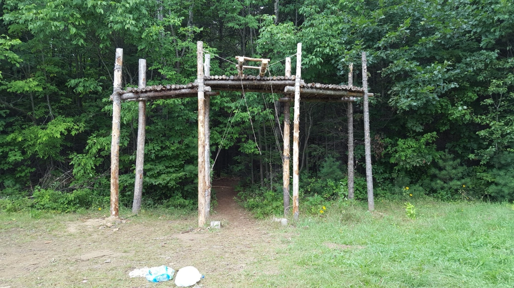
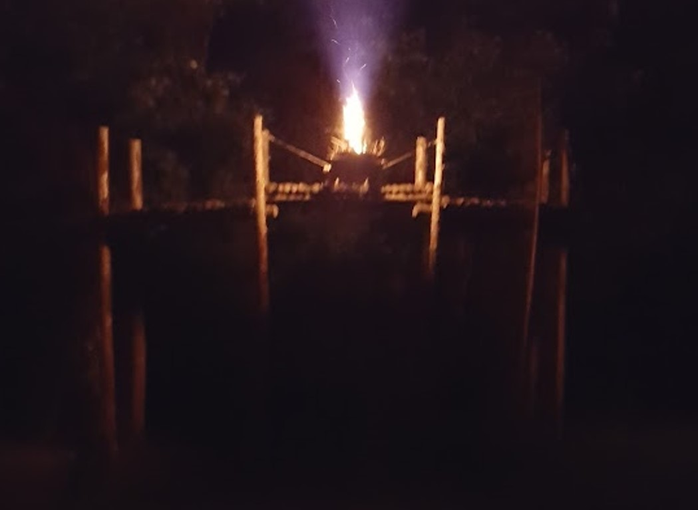

The Surprising Connection between Engineering and Scouting
I still remember the day when my cousin Mira came to our place and was telling my 12-year-old self to join the scout’s movement and how fiercely I was saying “no” for no real reason. After enough convincing, I decided to give it a shot, and little did I know was that decision took me a roughly 20 year adventure where I met so many friends, carved unforgettable memories, and learned the scout values.
During my first year of scouting on February 22nd, the birthday of the founder of scouting, Lord Robert Stephenson Smyth Baden-Powell of Gilwell (or B.P for short), I learned for the first time about the last speech of B.P.
Dear Scouts,
If you have ever seen the play Peter Pan you will remember how the pirate chief was always making his dying speech because he was afraid that possibly when the time came for him to die he might not have time to get it off his chest. It is much the same with me, and so, although I am not at this moment dying, I shall be doing so one of these days and I want to send you a parting word of goodbye. Remember, it is the last you will ever hear from me, so think it over.
I have had a most happy life and I want each one of you to have as happy a life too.
I believe that God put us in this jolly world to be happy and enjoy life. Happiness doesn’t come from being rich, nor merely from being successful in your career, nor by self-indulgence. One step towards happiness is to make yourself healthy and strong while you are a boy, so that you can be useful and so can enjoy life when you are a man. Nature study will show you how full of beautiful and wonderful things God has made the world for you to enjoy. Be contented with what you have got and make the best of it. Look on the bright side of things instead of the gloomy one.
But the real way to get happiness is by giving out happiness to other people. Try and leave this world a little better than you found it and when your turn comes to die, you can die happy in feeling that at any rate you have not wasted your time but have done your best. ‘Be Prepared’ in this way, to live happy and to die happy – stick to your Scout promise always – even after you have ceased to be a boy – and God help you to do it.
Your Friend,
Baden-Powell
To me, the most powerful statement in this message was to leave the world a better place than you find it, by always making an extra effort to help others, and spreading happiness. This principle has guided my life, and by the time I was entering engineering school, I decided to somewhat modify the statement. I didn’t want to live my life to leave the world a little better than I found it, but I want to leave the world in the best possible shape. Throughout my scouting journey, I had the honor of leading so many boys and girls to teach them all the values of the scout law – that is to always do a daily good turn, to respect their friends, to be honorable, to be dependable, and so much more; but also, more technical aspects such as tying knots, starting a fire to keep warm or for cooking, survival in the forest, etc.
The one scouting technique that I used the most throughout my journey was certainly the square leashing knot. I dubbed this knot “the maker of memories”, and you can see how it is done with the video below by yours truly.
What makes the two pieces of wood “stick” together is the friction between the two rugged surfaces. The square leashing brings the two pieces tightly together which increases the friction between the two interfaces. The bark of the trees are coarse, thus making the square leashing quite effective.
From my experience, there was no greater joy than to see the proud look on the face of the kids that completed their first leashing and contributed to the construction with the rest of the scout troop. So, this begs the question, what can you do with the square leashing? Here is a small sample of the constructions done by my scouts throughout the years, and it they certainly played a role into me going in engineering:





Thinking back about my adventures, I asked myself the question: “What made me stay in the movement for so long?” Well, I don’t think I can answer this question in a single sentence. I think what makes the scouting movement so special is the connections we make with people through good turns and service, but also the personal growth such like conquering your fears. For me, it’s the story of Denis, a shy scout that to conquer his fear of speaking with strangers decided to go to an unknown town and trade a service to residents of the town in exchange of the permission of planting his tent on their lawn for the night and leaving early in the morning. It’s the story of Georges that was scared that his basement would flood in Spring 2017 in Montreal but received much needed help from scouts who quickly built a sandbag barrier and prevented the flood. It’s the joyful sleepless nights near a campfire, laughing, singing, and enjoying deep conversations. It’s the proud parents seeing their kids when they receive their well deserve badges or recite their scout promise in front of the whole scout group. It’s the brotherhood and sisterhood that is created in this tight-knight community knowing we carry each other in our hearts. It’s the happiness that we are contributing to making the world a better place, and to me, that is everything.
Yours in scouting,
Chief Anthony Maalouly